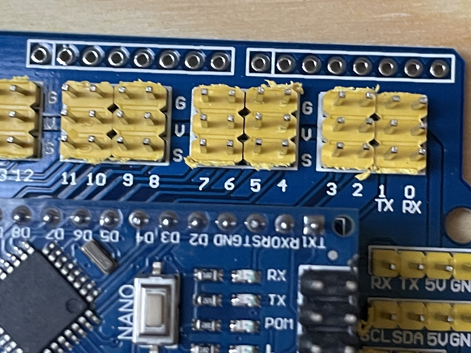
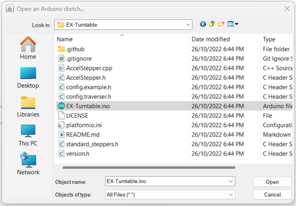

Getting started¶

Assembly¶
For assembly, we will assume the default ULN2003/28BYJ-48 combo is in use with an Arduino Nano V3, a standard 3 pin Arduino compatible hall effect sensor, and a dual relay board.


For the Tinkerers and Engineers, a much neater solution is to use a prototyping or strip board with much shorter (and soldered) connections to ensure reliability of the connections.
We will also assume a prototyping shield is available that provides regulated 5V power sufficient for driving the ULN2003/28BYJ-48 stepper combo, and that there is a power supply with a suitable DC power plug to suit the prototyping shield.
Throughout the assembly process, you can refer to this Fritzing diagram to help validate your connections are correct (open this image in a new tab or window and zoom in to see the detail):

Connection summary¶
Summary table of all connections required during assembly:
Device Pin |
Arduino Pin |
Nano Shield Pin |
|---|---|---|
ULN2003 IN1 |
A0 |
A0 S |
ULN2003 IN2 |
A1 |
A1 S |
ULN2003 IN3 |
A2 |
A2 S |
ULN2003 IN4 |
A3 |
A3 S |
ULN2003 + |
5V |
A0 V |
ULN2003 - |
GND |
A0 G |
Hall effect - (Left) |
GND |
5 G |
Hall effect Unmarked (middle) |
5V |
5 V |
Hall effect S (Right) |
5 |
5 S |
Dual relay VCC |
5V |
3 V |
Dual relay GND |
GND |
3 G |
Dual relay IN1 |
3 |
3 S |
Dual relay IN2 |
4 |
4 S |
CommandStation 20 (SDA) |
A4 |
A4 S or SDA |
CommandStation 21 (SCL) |
A5 |
A5 S or SCL |
CommandStation GND |
GND |
A4 G or I2C GND |
Of course for the Tinkerers and Engineers, if you’re not using a Nano or a prototyping shield, adapt the details as suits your configuration.
1. BEFORE you start¶
Gather all your components and visually check them all for any obvious damage, paying particular attention to pins on the Arduino to make sure they are straight.


2. Insert the Nano into the shield¶
Insert the Nano into the prototype shield socket, taking care to ensure the USB socket is located at the same end as the DC power jack, and that all pins are straight and aligned correctly with the female headers.
The various pin numbers may also be printed on the prototyping shield to confirm the correct orientation.


At this point, it’s a good idea to take careful note of the various pin markings on your prototype shield as it’s critical that these are correct when connecting the various components.
With the shield used in these assembly photos, you will note that each of the Nano GPIO pins has three pins associated with it marked “G” for ground, “V” for 5V, and “S” for signal, with this last pin being the actual Nano GPIO pin.
{kind=link}
3. Connect the stepper controller and motor¶
Firstly, note that the ULN2003 controller will have four pins marked “IN1” through “IN4”, as well as a pair of pins with “+” and “-“. There is a likely a jumper installed across two pins beside these that is unmarked, leave this in place.
You will need to connect six of the female to female Dupont wires from the ULN2003 pins to the Arduino prototype shield as below:
ULN2003 Pin |
Nano Shield Pin |
|---|---|
IN1 |
A0 S |
IN2 |
A1 S |
IN3 |
A2 S |
IN4 |
A3 S |
+ |
A0 V |
- |
A0 G |


Insert the stepper motor connector into the recepticle on the ULN2003 controller. Note that it will only go in one way, so check the orientation and simply plug it in.


4. Connect the hall effect sensor¶
The hall effect sensor has three pins, and likely only two of these pins are marked, the left with “-” and right with “S”. The middle pin is likely to be unmarked, and will be the 5V pin. There are probably many different varieties of sensors and designs out there, but both that I have (from different suppliers) are marked identically.
Use three of the Dupont wires and connect these from the hall effect sensor to the Arduino prototype shield as below:
Hall Effect Pin |
Nano Shield Pin |
|---|---|
- (Left) |
5 G |
Unmarked (middle) |
5 V |
S (Right) |
5 S |
{kind=link}

5. Connect the dual relay board¶
Note there should be six pins on the dual relay board marked “VCC”, “GND”, “IN1”, “IN2”, “COM”, and “GND”. The “COM” and “GND” pins should have a jumper installed to connect these together. Leave this in place.
Use four Dupont wires to connect the other four pins as below:
Dual Relay Pin |
Nano Shield Pin |
|---|---|
VCC |
3 V |
GND |
3 G |
IN1 |
3 S |
IN2 |
4 S |


6. Connect power and test¶
At this point, it should be safe to plug in the power supply to the DC power jack on the prototyping shield.
When the power supply is turned on, the power LEDs on the Arduino Nano and dual relay board should be lit. Note there is likely no power LED on the ULN2003 stepper controller, and testing of this will require loading the Turntable-EX software on to the Nano in step 7 below.

To validate the hall effect sensor is connected correctly, put a magnet in close proximity (within a millimetre or so) of the sensor IC, and the onboard LED should light up.


7. Load the Turntable-EX software¶
Tip
Please read through this entire section prior to loading any software onto your Arduino. It is also recommended that the turntable is able to trigger the homing sensor correctly to ensure the automatic calibration works correctly at first startup.
Further to this, note that you will need to end up with two separate folders; one containing the CommandStation-EX software as per Install using the Arduino IDE, and an additional folder containing the Turntable-EX software. The Turntable-EX software is not a component of CommandStation-EX or vice versa, and as such they should not exist in the same folder.
At the time of writing, there is no installer for Turntable-EX like there is for the CommandStation, so you will need to install the Arduino IDE and load the software onto the Arduino manually.
As noted in the tip above, you should have a Turntable-EX folder alongside the CommandStation-EX folder, and neither should reside in the other (the CommandStation-EX software is required in the next step):

The process here is the same as installing CommandStation-EX via the Arduino IDE which you can find on the Install using the Arduino IDE page.
When you get to the point of opening the sketch, ensure you open the Turntable-EX sketch:
{kind=link}
Use Windows Explorer to either copy or rename “config.example.h” to “config.h”.
If you need to make adjustments to config.h, refer to the Configuration options.
Set the board type to “Nano” and set the correct Processor type (typically ATMega328P):

After any adjustments are made and “config.h” has been created, the software can be uploaded to the Arduino with the upload button:
Once the software is loaded successfully on to Turntable-EX, the stepper motor should automatically start rotating in an attempt to find its “home” position, which will be activated when the magnet at one end of the turntable comes in close proximity to the hall effect sensor.
If you don’t have the magnet installed at this point, or if it is too far from the sensor, Turntable-EX will rotate several turns prior to flagging that homing has failed, and will then cease turning. The automatic calibration process will not commence if homing has failed.
If your testing of the hall effect sensor in step 6 above succeeded, then the issue is likely to be the distance the magnet is from the sensor, and this will require adjustment. See Troubleshooting Turntable-EX for further assistance if required.
Automatic calibration¶
Note
If you have loaded the code too soon, and the automatic calibration has succeeded and recorded an inaccurate step count, then have no fear as there is a command you can run on the CommandStation to reinitiate the calibration sequence which is outlined in the Turntable-EX commands section.
Also, if you have enabled the FULL_STEP_COUNT option in “config.h”, that will prevent automatic calibration occurring, refer to FULL_STEP_COUNT.
When Turntable-EX is first loaded onto your Arduino, and it has successfully performed the homing process outlined above, it will commence an automatic calibration sequence. This involves several rotations of the turntable to ensure it is homed accurately, and is then able to count the steps required to complete a full rotation of the turntable.
Once the calibration sequence has completed, it will display the step count for an entire rotation, which you should take note of for calculating the various positions in Tuning your turntable positions.
The output in the serial console should look similar to the below:
Homing started
Turntable homed successfully
CALIBRATION: Phase 1, homing...
CALIBRATION: Phase 2, counting full turn steps...
CALIBRATION: Completed, storing full turn step count: 4097 <<== This is the step count to record
Turntable homed successfully
At this point, the full turn step count is written to the Arduino’s EEPROM so that it can be retrieved each time Turntable-EX starts up, preventing the need to repeat the calibration sequence at each subsequent start.
You can now safely power off Turntable-EX and remove the USB cable from your PC as it is no longer required for normal operation, and all further commands will be issued by the CommandStation.
8. Add the Turntable-EX device driver to CommandStation-EX¶
Note
As mentioned previously, your CommandStation needs to be running the “add-turntable-controller” branch of CommandStation-EX.
This will display in the serial console of your CommandStation as version 4.0.2.
If the “myHal.cpp_example.txt” is missing the lines referred to below, or if you receive compile errors that the file “IO_TurntableEX” is missing when attempting to upload the CommandStation software later in this process, this indicates you are using the incorrect version of CommandStation-EX.
The zip file containing the correct version of CommandStation-EX should also be attached to the Turntable-EX release.
Before you will be able to test or use Turntable-EX, you need to configure the CommandStation-EX software to load the appropriate device driver.
This requires creating or editing the myHal.cpp file in the CommandStation-EX code and uploading it to your CommandStation.
Tip
It is helpful to have a high level understanding of how device drivers and the HAL works in the CommandStation as explained on the I/O Device Drivers and HAL page. However, if that page is more information than you require at this point, then follow the steps below to add the required Turntable-EX device driver and device.
Before continuing, refer to the file “myHal.cpp_example.txt” included with the CommandStation-EX software, and note the following.
At the top of the file there are a number of lines beginning with “#include”:
// Include devices you need.
#include "IODevice.h"
#include "IO_HCSR04.h" // Ultrasonic range sensor
#include "IO_VL53L0X.h" // Laser time-of-flight sensor
#include "IO_DFPlayer.h" // MP3 sound player
//#include "IO_TurntableEX.h" // Turntable-EX turntable controller
Note the last line, this is the device driver required to enable Turntable-EX support.
Scrolling down towards the bottom of that file, you will also see this indented section:
//=======================================================================
// The following directive defines a Turntable-EX turntable instance.
//=======================================================================
// TurntableEX::create(VPIN, Number of VPINs, I2C Address)
//
// The parameters are:
// VPIN=600
// Number of VPINs=1 (Note there is no reason to change this)
// I2C address=0x60
//
// Note that the I2C address is defined in the Turntable-EX code, and 0x60 is the default.
//TurntableEX::create(600, 1, 0x60);
If you don’t have an existing “myHal.cpp” file, then follow these steps to create a new one: Adding a New Device. Note that you don’t need to worry about copying or providing device driver files, as these are already included with the CommandStation-EX software.
Copy and paste the relevant lines from the “myHal.cpp_example.txt” file as above, which should result in the following content in your new “myHal.cpp” file:
#include "IODevice.h"
#include "IO_TurntableEX.h" // Turntable-EX turntable controller
void halSetup() {
//=======================================================================
// The following directive defines a Turntable-EX turntable instance.
//=======================================================================
// TurntableEX::create(VPIN, Number of VPINs, I2C Address)
//
// The default parameters are:
// VPIN=600
// Number of VPINs=1 (Note there is no reason to change this)
// I2C address=0x60
//
// Note that the I2C address is defined in the Turntable-EX code, and 0x60 is the default.
TurntableEX::create(600, 1, 0x60);
}
In the device setup above, there are three parameters provided, but only two may need to change in your environment if you have other devices that may conflict with these two settings:
VPIN=600 - This is the default virtual pin (Vpin) ID that is used to send Turntable-EX commands to. Vpin IDs need to be unique, so if this ID is used elsewhere, change as necessary (refer Overview).
I2C address=0x60 - This is the default address on the I2C bus that the Turntable-EX is configured to use. This address also needs to be unique, so change this also if it is in use elsewhere, both in “myHal.cpp” and in “config.h” in the Turntable-EX software.
If you already have an existing “myHal.cpp” file, then you simply need to add these entries in the appropriate sections of your existing file, noting that the “#include” needs to be before “void halSetup() {” and the “TurntableEX::create…” needs to be before the final “}”.
Follow the rest of the directions for Adding a New Device all the way through to the Upload the new version of the software step to upload your newly configured CommandStation.
Note there is no point in checking the driver at this stage as Turntable-EX is not connected, and will show as “OFFLINE”.
9. Connect Turntable-EX to your CommandStation¶
To control Turntable-EX from your CommandStation, you will need a connection to the I2C (SDA, SCL) pins.
Danger
Ensure you turn the power off to both your CommandStation and Turntable-EX prior to making any of these connections.
On the CommandStation, assuming this is a Mega2560 or Mega2560 + WiFi, the SDA (pin 20) and SCL (pin 21) pins are typically labelled as such, so should be easy to identify.
On an Arduino Nano (and Uno) however, the SDA and SCL pins are shared with analog pins A4 and A5, and therefore aren’t explicitly labelled. The SDA pin is A4, and the SCL pin is A5.
Connect these pins to your CommandStation as shown in the table below, noting that it is important to ensure the ground is also connected to ensure the I2C communication is reliable.
CommandStation Pin |
Nano Shield Pin |
|---|---|
20 (SDA) |
A4 S (SDA) |
21 (SCL) |
A5 S (SCL) |
Any spare ground |
A4 G |
{kind=link}


Now you’re ready!¶
At this point, you should have a fully assembled Turntable-EX with the software loaded, a default configuration, and the device driver installed and configured in your CommandStation.
In addition, Turntable-EX should be connected to your CommandStation ready to test, tune your turntable positions, and configure EX-RAIL ready for use on your layout.
Click the “next” button to get cracking!